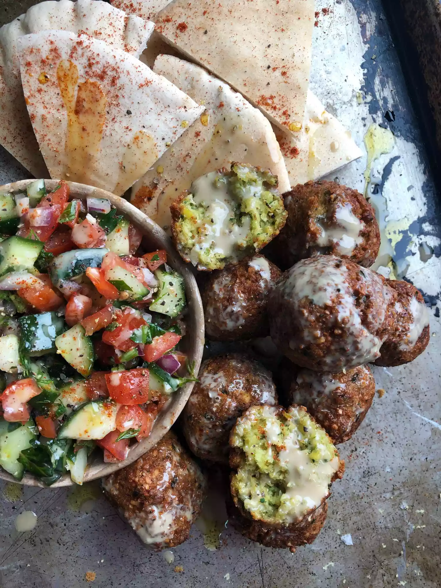

How to Make Falafel
Listen, there were a lot of glorious, fulfilling days in culinary school, but perhaps one of
the most rewarding
classes was the falafel lesson. There are few academic experiences that you can say ended with pita pockets
stuffed to the brim with crispy falafel balls, but this was one of them, and I reflect upon it very fondly. One
of the biggest realizations from this day was that making crispy-on-the-outside, fluffy-on-the-inside,
packed-with-flavor falafel is not that hard, nor does it require any specialty ingredients. Since school, I've
made these plenty of times for small get togethers. Who would ever turn down an
invitation to a falafel party? If you're ready to start whipping up a batch of your own, here's how it's done.
Falafel Ingredients
- 1 cup dry garbanzo beans
- ½ yellow onion, diced
- ½ cup chopped fresh flat-leaf parsley
- 4 cloves minced garlic
- 2 teaspoons lemon juice
- 1 tablespoon all-purpose flour, or more as needed
- 1 ½ teaspoons salt, or to taste
- 1 teaspoon ground cumin
- ½ teaspoon ground coriander
- ¼ teaspoon baking soda
- ⅛ teaspoon cayenne pepper
- oil for frying
How to make falafel step by step:
- Place garbanzo beans into a large container and cover with several inches of cool water; let stand 12 to 24
hours. Drain.
- Blend garbanzo beans, onion, parsley, garlic, flour, lemon juice, salt, cumin, coriander, baking soda, and
cayenne pepper together in a food processor, scraping down the sides of the bowl as necessary, until mixture
is finely ground and holds together when pressed. Transfer garbanzo mixture to a bowl, cover with plastic
wrap, and refrigerate until flavors blend, 1 to 2 hours.
- Heat oil in a deep-fryer or large saucepan to 350 degrees F (175 degrees C)
- Divide dough into 12 portions and roll each with moistened hands into a ball
- Working in batches, cook falafel balls in hot oil until browned and crispy, about 5 minutes. Transfer to a
wire rack to drain
Back to top
Back